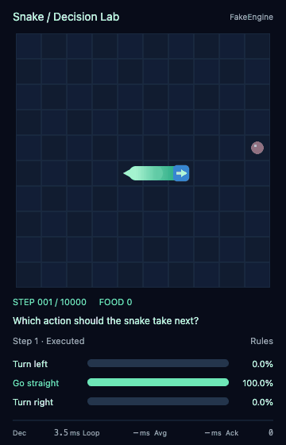

历史资料 · 指标与成绩仅适用于原报告版本
本页目录
历史说明，仅用于解释旧结果；其中旧套件命令不适用于现役 CLI。
旧版运行手册§
本页保留迁移前的 API、命令和协议定义，只用于解释历史结果。新实验使用 当前指标说明 和 运行说明。
查看旧版读出方法与默认设置
用同一套协议比较 choice / yes_no 两种 boxed 读出方法、无规划 / 共享规划和不同本地视觉模型。 支持 vLLM / Transformers 两种推理后端，不训练、不下载模型、不自动申请 GPU。 当前内置 Snake；bench、模型模板、推理 backend 分层，后续任务可以独立接入。

Snake · Rule engine · No browser wait
想先通过可操作的例子了解整个框架，可直接打开 离线交互文章：下一步，往哪走？。单个 HTML 内含局面浏览、配对实验、题目练习、读出示例、三个模型的完整输入／输出模板、规则回放与调用计算器，无需服务器或 GPU。模板可切换四种规划条件并复制或下载；输出占位符不是模型实测。
日常使用三个独立榜，每个只看一个主指标：Perception 感知准确率、Readout 动作排列一致率、Safety 完整安全集合准确率。入口和定义见 三个独立榜单。底层 108 个分层局面仍可复用，数据详情见 Snake safety v1。
PYTHONPATH=src .venv/bin/python run.py --benchmark perception --split dev
PYTHONPATH=src .venv/bin/python run.py --benchmark readout --split dev
PYTHONPATH=src .venv/bin/python run.py --benchmark safety --split dev
新榜默认 no_plan，用 --conditions 统一选择规划条件；结果主表是 leaderboard.csv，细项收在 diagnostics.json。每条命令只运行一个任务，追加 --dry-run 可先查看清单。Python 使用 SnakeBench(benchmark="safety", split="dev")。以下原有 suite/stages 示例保留作历史兼容说明，新实验优先使用上面的单榜入口。
Python：加载一次模型，运行测试§
查看本节历史配置与命令
从仓库根目录执行脚本，使用现有 .venv/bin/python 并设置 PYTHONPATH=src。
from vdecision import Engine, SnakeBench
if __name__ == "__main__":
engine = Engine("models/Qwen/Qwen3.5-4B")
result = SnakeBench(suite="smoke").run(engine)
print(result.complete, result.summary["costs"], result.output_dir)
独立脚本保留上述 main 保护，以兼容 vLLM 的 spawn 多进程。正式对比只需调整保护块内的 bench 配置；同一个 engine 可以复用于多次运行：
bench = SnakeBench(
suite="standard",
methods=("choice", "yes_no"),
conditions=("no_plan", "shared_full", "shared_plan_only", "shared_no_think"),
seeds=range(8),
)
result = bench.run(engine, output="outputs/qwen35-4b-standard")
只支持两种 methods，默认是 ("choice", "yes_no")，均在原生 assistant 回答边界预填 \boxed{：
| 方法 | 模型看到的候选信息 | 读取的答案 token | 每题请求数 |
|---|---|---|---|
choice |
全部 A/B/C… 选项 | 字母 | 1 |
yes_no |
当前候选描述，无选项列表和字母 | 小写 yes / no | K |
yes_no 直接问 Is "Turn left" the best answer to the question above? Reply with exactly \boxed{yes} or \boxed{no}, with no explanation.。
同一候选输入不受其他候选和排列影响；返回语义 id，不附加未展示的 label。
并列仍取首个最大值，因此相同分数不保证最终动作与排列无关。
两方法沿用 vdistill 的 boxed prefill 做法：user 明确要求 boxed 格式，在原生思考关闭边界后
追加字面量 \boxed{，读取下一 token，不采样生成前缀或右花括号。原始 plan token 不解码重编码。
每个候选标签必须在该边界仍为单 token；本地 Qwen 的 T 会与左花括号合并，因此 choice
支持 A–S（最多 19 项），Snake 的 2–5 项不受影响。choice 使用字母 log-prob 的 softmax；
yes_no 先算 q = P(yes | yes/no) 再算 q / sum(q)，没有输出词表约束。
PYTHONPATH=src .venv/bin/python run.py --suite smoke --stages perception readout \
--conditions no_plan --model models/Qwen/Qwen3.5-4B --methods choice yes_no
当前 choice 对应历史 choice_boxed，当前 yes_no 对应历史 yes_no_naive_boxed。
其他旧名称已从 Python 和 CLI 移除，不提供别名。
smoke/standard 使用 snake-bench-v4，safety 使用 snake-bench-v5；v1/v2/v3/v4 历史结果仍可读取，但旧 choice、yes_no 不自动转换含义。
完整六方法 prompt、历史命令和三组结果见 standard 后端实验报告。
用 stages 选择测试内容；smoke/standard 省略或传 None 时运行全部三类，safety 默认只运行 perception/readout。单类可以直接传字符串，多类传列表：
bench = SnakeBench(stages="perception") # 只跑九题诊断
bench = SnakeBench(stages="readout") # 只跑固定截图动作选择
bench = SnakeBench(stages="episode") # 只跑闭环游戏
bench = SnakeBench(stages=["perception", "readout"]) # 两种固定截图测试
bench = SnakeBench() # 三类全部运行
| stages | smoke | standard |
|---|---|---|
perception：九题诊断 |
144 次评分 | 1728 次评分 |
readout：动作选择 |
192 次评分 | 2304 次评分 |
episode：闭环游戏 |
9 局 | 72 局 |
上表使用默认 methods / conditions / seeds，并假定模型支持全部条件。
前两类不推进游戏，只有闭环每局最多执行 128 步。九题诊断默认使用无规划，单独运行时不会
生成任何 plan。传入 perception_conditions（CLI：--perception-conditions）可为感知题启用
四条件对照；它与 conditions 独立，后者控制动作选择和闭环。各阶段复用同一模型、同一种子的
共享规划，只生成实际使用的规划。
随机基线也仅在选择 episode 时运行。stages 会保存在 run.json 的配置中。
output 必须不存在，省略时自动生成唯一目录。默认不生成 GIF；需要复盘时传入
save_gifs=True。BenchResult.load(path) 从事件重新汇总，无需 GPU 或模型。
如需记录模型加载失败，使用 bench.run(engine_factory=lambda: Engine(path))。
Engine 可以设置 tensor_parallel_size、max_model_len、gpu_memory_utilization、
thinking_tokens、plan_tokens。vLLM 默认 BF16、TP1、8192 上下文、
2048 thinking / 128 plan，开启前缀缓存，显存配额使用安装版本的官方默认值。
vLLM 执行配置§
查看本节历史配置与命令
默认使用历史实验中的 vllm_default_apc 配置：execution_profile="default"，
开启跨请求前缀缓存（APC），编译和 CUDA Graph 由当前 vLLM 版本自动选择兼容模式：
engine = Engine(model)
Python 和 CLI 均采用此默认配置，无需额外参数。此配置不覆盖
enforce_eager、编译设置、调度上限和显存配额；显式传入 gpu_memory_utilization
仍可覆盖显存配额。BF16、TP1、上下文长度、评分和规划采样规则保持显式配置。
prefix_cache=None 根据后端选择默认值：vLLM 开启，Transformers 和其他后端关闭。
显式传入 prefix_cache=False（CLI：--disable-prefix-caching）可关闭 APC；
--enable-prefix-caching 可显式开启。
如需恢复历史 eager 配置（禁用编译和 CUDA Graph、显存比例 0.65），同时关闭 APC：
engine = Engine(model, prefix_cache=False, backend_options={"execution_profile": "eager"})
对应 CLI 参数为 --vllm-profile eager --disable-prefix-caching。执行 profile 与缓存开关独立，
只选择 eager 不会关闭 APC。历史实验产物及报告中的配置记录保持原样。
结果保存请求参数、解析后的 vLLM 配置、编译缓存目录和加载耗时。共享规划生成前会 reset 前缀缓存，固定截图评分之间保留缓存；各 job 的缓存独立。 三组评分延迟、缓存命中与启动成本见 历史实验报告。
Transformers 后端§
查看本节历史配置与命令
backend="transformers" 可用于全部 stages 和模型支持的全部 conditions，包括先生成 reasoning / plan 再决策：
from vdecision import Engine, SnakeBench
if __name__ == "__main__":
engine = Engine("models/Qwen/Qwen3.5-4B", backend="transformers")
result = SnakeBench(suite="smoke", stages=["perception", "readout"]).run(engine)
print(result.summary)
默认自动选择 CUDA（BF16），无 CUDA 则选择 CPU（FP32）；可以显式设置
device="cuda:0" / device="cpu" 及 dtype="float32" / "float16" / "bfloat16"。
使用单设备、eager attention，评分请求采用左侧 padding 的 microbatch，不进行跨请求 KV cache 复用。
默认 backend_options={"max_batch_size": 8}，超过上限时分批；可以显式设为 1 作数值对照。
规划阶段保留逐请求生成和独立 RNG；本实验每个 job 的思考、短计划相互依赖，跨 seed 由独立 job 并行。
tensor_parallel_size != 1、prefix_cache=True、显存比例覆盖属于 vLLM 专用设置，传给 Transformers 会报错。
生成采用 generate()，支持原有 greedy / recommended / probe 参数、两阶段 token 预算及停止标记；
presence / frequency penalty 只计入本次生成的 token。每次请求独立设置采样种子，并恢复调用方 RNG 状态。
生成过程可使用模型内部 KV cache，结束后不将它共享给下一张图。
评分采用 forward：取最后输入位置的 logits，转 FP32 后对完整词表做 log_softmax，再提取候选。
评分不调用 generate()，不施加温度、top-p 或惩罚。choice / yes_no 的归一化公式保持相同。
多图输入只展开图像占位 token，reasoning / plan 的原始 token 不解码后重编码；展开后再次检查上下文预算。
返回的 input_tokens 包含展开后的图像 token；纯评分的 output_tokens=0，不能与 vLLM 为读分生成的一个 token 混为一谈。
yes_no 的候选请求在同一个 batch 中并行 forward，与 vLLM 的调用粒度一致；
choice 只需一个请求就能读取全部选项 logits。每行读取最后一个真实 token，input_tokens 排除 padding。
这里未跨实验条目合并 batch；两个后端都按一次 engine.score() 的候选集合调度。
批处理可能引入浮点数值差异，应检查原始 log-prob、并列最大值和排列一致率。
基础依赖现在是 PyTorch、Transformers、Pillow；vLLM 是可选 extra。新环境使用基础依赖即可运行
Transformers，使用 vLLM 时安装 .[vllm]（uv 对应 uv sync --extra vllm）。此次只更新依赖声明和锁文件，
没有安装、升级或卸载当前环境中的包。为兼容已有脚本，省略 backend 时仍默认 vLLM。
run.json / summary.json 记录后端、设备、精度与执行方式，metrics.csv 包含 backend 列。
两个后端使用同一个 bench 入口，通过 --backend 选择。
命令行与批量模型§
查看本节历史配置与命令
# 共享运行时与持久缓存；新入口默认 standard，初测显式选择 smoke
bash scripts/run.sh --suite smoke --model models/Qwen/Qwen3.5-4B
# Transformers：先生成共享策略，再测固定截图的动作选择
bash scripts/run.sh --backend transformers --suite smoke --stages readout \
--conditions shared_full shared_plan_only --model models/Qwen/Qwen3.5-4B
# 只跑九题诊断；多个阶段可写 --stages perception readout
bash scripts/run.sh --suite smoke --stages perception --model models/Qwen/Qwen3.5-4B
# 不加载模型、不创建输出目录：查看实际实验清单
PYTHONPATH=src .venv/bin/python -m vdecision --suite smoke --dry-run
# 单模型真实 tokenizer / processor 离线检查
PYTHONPATH=src HF_HUB_OFFLINE=1 .venv/bin/python -m vdecision \
--preflight --model models/google/gemma-4-E4B-it
# 所有 9 个型号离线检查；生成独立 validation.json
PYTHONPATH=src HF_HUB_OFFLINE=1 .venv/bin/python scripts/check_models.py
# 已有 GPU 时，每个家族从最大型号开始，只跑首个兼容型号的 smoke
PYTHONPATH=src HF_HUB_OFFLINE=1 .venv/bin/python scripts/check_models.py --smoke
# 离线重新汇总（只读，不覆盖历史产物）
PYTHONPATH=src .venv/bin/python -m vdecision --summarize outputs/某次运行
直接指定三个初测模型的 shell 脚本也只需要一个循环，每个模型在独立进程中运行：
for model in Qwen/Qwen3.5-4B Qwen/Qwen3-VL-4B-Thinking google/gemma-4-E4B-it; do
bash scripts/run.sh --suite smoke --model "models/$model" || exit 1
done
评测协议 snake-bench-v4§
查看本节历史配置与命令
| 预设 | 固定截图 | 默认游戏种子 | 完整 CoT 模型的实验数 |
|---|---|---|---|
| smoke | 四类场景各 1 张 | 0 | 345 |
| standard | 48 张 | 0–7 | 4104 |
实验数是评分任务 / 游戏局数，不是推理请求数。choice 每任务一个请求，yes_no 每个候选 一个请求并组成 batch。感知题默认无规划，使用正序 / 反序候选；可显式配置感知规划条件。动作诊断 对四种条件和两种方法枚举全部六种排列。每张诊断截图按固定顺序轮流分配一个规划种子， 不再要求八个 worker；闭环对每个游戏种子运行全部条件、方法和一次随机基线。
默认四种条件的定义如下；它们都在最终回答位置读取候选 token 的原始 log-prob：
| condition | 规划阶段 | 决策时的共享前缀 |
|---|---|---|
no_plan |
不生成 reasoning 或 plan | 无规划，仅规则、当前图像、问题和回答前缀 |
shared_full |
开启 thinking，生成 reasoning 后生成 plan | 完整 reasoning + plan |
shared_plan_only |
与 shared_full 使用同一次生成 | 移除 reasoning 内容，精确保留相同 plan token |
shared_no_think |
关闭 thinking，直接生成一份独立 plan | 直接生成的 plan |
每个规划种子最多生成两份整局规划：带 reasoning 的一份供 full / plan_only 配对使用， 关闭 thinking 的一份供 shared_no_think 使用。每份分别供 choice / yes_no 共用。 两种生成使用相同参考图、任务目标、plan token 预算、plan 阶段采样参数及种子； 只有带 thinking 的路径额外使用 reasoning 预算。某一条生成路径失败不会阻断另一条。 只有所选阶段的条件均为 no_plan 时才不生成规划；perception 默认 no_plan，也可显式启用共享规划。
no_plan 是原 no_cot 的新名称；Python / CLI 配置请改用新名称，历史结果不重写。
新协议升级为 v4，v1/v2/v3 旧结果仍可离线汇总。
vLLM 后端使用 max_tokens=1 获取 next-token log-probs，忽略被选出的 token；
Transformers 后端直接 forward 读分，不生成 token。两者的 no_plan 均不生成 reasoning / plan。
关闭 thinking 时，Qwen thinking 模型以空 <think>\n\n</think> 进入回答位置；
Gemma 关闭 system 中的 thinking 开关，并使用空 thought 通道。生成的短 plan 若重新打开
thinking 标记会报错并保留证据，不把它算作成功的直接 plan。
低层调用可以显式使用 engine.plan(rules, image, thinking=False)；thinking=True 请求
带 reasoning 的规划，不支持时明确报错；省略则按模型原生能力选择。
规划只看独立外观示例图；决策只依据最新截图及规划，不接收坐标或安全动作标签。
闭环执行所选动作，不过滤碰撞。配对的是初始种子，不是后续游戏轨迹。
新协议默认贪心规划，固定预算；可显式传入 Sampling("recommended") 或
Sampling("probe")，命令行使用 --sampling。原始候选读分始终不施加采样截断、
惩罚或词表约束。choice 对字母的原始 log-prob 做 softmax；yes_no 先计算每个候选的
q = P(yes | yes/no)，再计算 q / sum(q)，不会对 q 再做 softmax。
汇总包括分类感知准确率、安全动作率、趋近食物率、六排列语义动作一致率、所选标签计数， 以及闭环平均食物数、吃食局比例、步数、终止原因、可避免碰撞与重复状态比例。 一般 Snake 状态不标注唯一最优动作。规划成本单独计数，复用不重复计费。
Snake 实时卡片、网页试玩与 GIF§
查看本节历史配置与命令
默认棋盘采用 topology_v2：深色网格、蓝色箭头蛇头、从颈部到尾部渐浅的绿色身体，
只连接真实连续的节段，尾端收尖。模型仍只看到 320×320 棋盘；问题和动作分数仅供观看。
新外观与规则说明改变了模型输入，不能把它与历史外观的结果视为同一实验条件。
run.json、汇总与指标记录 render_version；历史记录缺省为 classic_v1。
复现旧外观可指定 SnakeBench(render_version="classic_v1") 或 --render-version classic_v1。
本地网页无需额外依赖或前端构建。人工试玩无需加载模型：
PYTHONPATH=src .venv/bin/python -m vdecision.benches.snake.viewer
打开 http://127.0.0.1:8765，控制方式分为“人工”“规则”“模型（暂不支持）”。
人工模式通过按钮或 A/W/D 每次走一格；规则模式默认可用，直接运行 FakeEngine，
可选择种子、总步数上限（1–10000，人工默认 128，规则默认 10000）和 choice / yes_no 的分数展示形式，规划固定为 no_plan。
总步数是上限，撞墙或撞到蛇身仍会提前结束；人工和规则模式都生效，修改后点击重开。
模型选项置灰，网页 API 也拒绝 mode="model"，不会加载模型；原有 benchmark Engine 入口仍可使用。
--demo 保留为兼容参数，已经不再是启用规则模式的必要条件；--model 等参数目前仅保留配置。
规则模式逐帧握手：网页完成当前蛇身移动和分数条过渡，并经过浏览器绘制后，
发送带局 ID 和步数的 rendered 确认，后端才计算下一步；初始棋盘也需确认。
确认响应直接带回下一步状态和增量事件，前端立即开始呈现，无需等待下一次 GET 轮询。
HTTP/1.1 复用连接并关闭 Nagle 小包缓冲，避免逐步确认重复建立连接；远程访问仍受实际链路延迟影响。
蛇身和分数条并行使用 50 ms 过渡，完成画面经过浏览器绘制后才确认；没有额外固定停留。
“重播此局”也逐步等待动画和绘制完成，不再固定每步停留 600 ms；这是快速重播，原速体验通过真实时间 GIF 查看。
重播中的卡片耗时保留原局实测，不会按重播速度重算。
右侧参数按两列紧凑排列；诊断、玩法和原始读分默认折叠。
卡片显示最新一步和平均闭环耗时，右侧“耗时与连接诊断”列出当前局每一步的实测值，
并显示最近一次页面显示确认耗时、确认请求往返和服务处理耗时。请求往返减去服务处理只作为传输等开销的估计，
包含网络、排队和客户端处理；这些样本边界不同，不能直接相加为闭环耗时。
闭环从后端开始本步计时，到收到网页完成绘制后的确认结束，包含计算、传输、动画和确认；
步间的暂停不计入，步内因隐藏网页或断连导致的等待仍计入该步。每步以 step_timing 事件落盘，终局步骤也有记录。
页面另显示实际规则计算耗时和后端执行用时。
规则计算时间包含状态重建和规则读分；执行用时累计每步观察事件、规则计算、推进、截图哈希及事件写入的耗时，
不含暂停、浏览器传输和动画时间。完整逐步分数保留在事件文件中。
实时规则画面保留每一步及其分数，终局动作也完整播放。关闭、隐藏网页或切换回放时，
后端停在尚未确认的步骤；恢复跟随或重连后继续。重复或过期确认不会额外推进。
暂停后可单步查看。方法和种子在开始时固定，修改后点击重开生效，一次只运行一局。
交互事件默认保存在唯一的 outputs/snake-live/<时间>/，也可通过 --output 指定新目录。
这些目录是交互记录，不是完整 benchmark 矩阵，不使用 BenchResult.load() 汇总。
网页跟随当前局时自动采集实录：360×560 卡片使用与屏幕相同的 Canvas 像素，
棋盘保持 320×320；标题和模型名同一行，分数提示与右对齐的来源标签同一行，
卡片内文字统一为英文；底部一行 Dec / Loop / Avg / Ack 分别显示决策耗时、最近闭环、平均闭环及确认步数。
四项标签、等宽数字槽和单位各有固定坐标，位数变化不会左右跳动。旧 400×760 录制仍可导出。
以最高 30 fps 采集变化帧，记录 performance.now() 时间戳，异步分批保存到 recordings/<episode>/<recording>/。
“真实时间 GIF”按采集时间编码，保留蛇身与分数动画、计算等待和步间暂停；不再固定每步 600 ms。
“无页面等待 GIF”使用同一份录制中每步完成后的画面，按该步 execution_timing 的后端净执行耗时编码，
不包含页面轮询、传输、动画、显示确认或人工停留；不保留动画补间，也不额外停留终帧。
后端耗时包含观察、规则读分、游戏推进、截图哈希和步骤事件写入，与卡片中的纯规则读分耗时不同。
两种导出都保存原始闭环耗时文字；文字是实测值，不随导出节奏重算。
为兼容常见 GIF 播放器，每帧至少 20 ms，因此 FakeEngine 的无等待版可能比后端实测总时间略长。
缺少逐步计时或完成帧的旧录制不能推算无等待版，需要重新录制；两种按钮不会覆盖彼此。
GIF 时间精度为 10 ms，过近帧合并到至少 20 ms，长时间静止使用长帧停留；不补造丢失的浏览器帧。
采集与上传不作为下一步放行条件，闭环只等待网页绘制。导出过程中游戏可继续。
终局自动结束录制；中途下载、隐藏页面、重播或断连后的重开录制都标为片段，不能还原未观看的时段。
旧记录没有实录时按钮明确显示“导出快照 GIF”。API 默认优先实录，layout=snapshot 可显式导出旧式静态快照。
已有或正在运行的评测，通过只读查看器观看，不影响评测进程：
PYTHONPATH=src .venv/bin/python -m vdecision.benches.snake.viewer --run outputs/某次运行
查看器默认每 120 ms 增量读取完整事件；规则自动运行由确认响应直接推动，
后台 GET 每 250 ms 做状态同步与重连，前端按事件 ID 去重重叠或乱序到达的响应。
交互规则会等待网页绘制确认，只读评测查看器不控制评测进程。
支持选择局、重播、跟随最新和断线重连。
人工输入即时触发浏览器预测与约 50 ms 的移动动画，后端确认状态；连续按键按序提交，
无需等待事件轮询或 600 ms 的回放停留。只有显式重播使用逐步播放节奏。
实时观看需包含 episode 阶段；只运行 perception / readout 的目录没有游戏轨迹。
在远程机器运行时，使用 SSH 端口转发，例如 ssh -L 8765:127.0.0.1:8765 <主机>，
再从本机浏览器打开上述地址；服务默认只绑定回环地址。
每张决策卡片显示实际问题、三项读分和选中动作。回放从初始棋盘开始，逐步沿蛇身路径平滑移动；实时规则模式逐步显示执行后的状态，
分数条和百分比与蛇身同步使用 50 ms 过渡。保留上一动作的分数时明确标注对应决策步，
等待新读分时降低分数条透明度，不把旧结果标成新结果。人工模式没有模型分数。
“归一化动作分数”直接使用 Engine 的 score，最终动作取最大值；它不是随机抽取动作的频率。
yes_no 的独立 yes_score 可在“当前问题与原始读分”查看。随机基线与人工模式不显示伪造分数。
bench = SnakeBench(stages="episode", save_gifs=True, gif_layout="card")
# gif_layout="board" 保留纯棋盘 GIF；save_gifs 默认仍为 False。
CLI 对应 --save-gifs --gif-layout card。卡片默认 400×640，长问题自动增高；
每步停留 600 ms、终局 1200 ms，真实推理耗时显示在卡片中。
上述 CLI / benchmark GIF 仍是 Python 生成的决策快照；网页的“真实时间 GIF”使用浏览器采集时间轴。
网页卡片统一使用 Canvas 绘制，DOM 保留可访问文本和操作控件，按浏览器刷新率更新。
模型输入仍使用 Python 确定性渲染，浏览器动画不进入模型输入；网页支持减少动态效果的系统偏好。
生成可复现的合成演示 GIF、卡片及短蛇／长蛇／贴身／旋转的外观预览：
PYTHONPATH=src .venv/bin/python scripts/demo_snake_ui.py --output outputs/snake-ui-demo
规则引擎使用 hamiltonian_repair_v2：在偶数方形棋盘上构建 Hamiltonian 环，
保持蛇身从尾到头的环上顺序，安全时抄近路靠近食物。捷径不能越过蛇尾或未吃到的食物；
吃食时尾巴不移动，判定相应收紧。思路参考 John Tapsell 的算法说明。
在此基础上，动态尝试两次局部方格重接：先将环分为两个分量，再从不同位置连接成一个覆盖全棋盘的环。
仅接受保持蛇身顺序、且严格缩短当前食物环上距离的候选；不把两个小环误认为一个完整环。
食物更新时检查全棋盘；其余步骤仅从蛇头附近发起调整。搜索范围由棋盘大小限定，
达到曼哈顿距离下界时提前结束，找不到改进就沿原环前进。算法不依赖计时截止，重复状态决策保持一致。
这与 动态 Hamiltonian 环修复的思路 相近；
本实现额外要求每次重接严格降低食物距离，因此不会因反复改环而无限拖延吃食物。
标准 10×10 初始局始终有可走的下一条环边；每一步缩短到当前食物的环上距离，
每个食物最多 99 步，吃满剩余 97 格的保守上界是 9603 步，所以规则默认上限设为 10000。
修改过的步数上限仍会保留；若设得较小，可能在通关前因 step_limit 结束。
自定义奇数棋盘或不满足环上顺序的导入状态使用尾部可达性与剩余空间恢复策略，不承诺通关。
规则分数是安全前进距离除以到食物的环上距离，再在候选间归一化；被排除动作权重为 0。
choice 与 yes_no 使用同一策略，yes_score 是归一化前的规则权重，最终取最大分数动作。
网页卡片标为“Rules”，右侧解释算法及未调用模型；原始读分含各候选的 reason。
这不是模型概率，也不用于过滤或替换 benchmark 中模型选择的动作。演示脚本仍输出默认 128 步的短片。
对比固定环 v1 与动态修复 v2 的相同种子（不渲染、不等待网页），保存通关率、步数和决策耗时：
PYTHONPATH=src .venv/bin/python scripts/benchmark_snake_rules.py --games 1000 --workers 4 --output outputs/rule-comparison.json
在标准 10×10 棋盘、种子 0–999 的同种子对照中，两版都 1000/1000 通关； 平均步数从 2288.563 降为 1621.273（减少 29.16%），这组种子中每一局都减少了步数。 本机四进程验证时平均规则决策耗时从约 0.016 ms 增为 0.293 ms；不包含棋盘渲染和网页闭环等待。 这些是上述固定种子集的实测结果，动态修复不保证全局最少步数。
新事件增加 observation、episode_end，step 增加 observation_state、question、choices；
evaluation_state 继续表示执行后的状态。读分协议仍为 v4。
本地服务接口：GET /api/events?cursor=0 返回增量卡片帧、下一 cursor 和控制状态；
GET /api/card.png?id=<帧号> 返回 Python 决策快照卡片；
GET /api/export.gif?episode=<局ID>&timing=realtime 导出真实时间版，timing=backend 导出去页面等待版；
可用 recording=<录制ID> 指定同一片段；
POST /api/recording 接收带时间戳的浏览器 PNG 批次，按录制 ID 和偏移量幂等保存。
交互模式接受 POST /api/control（JSON）：
{"command":"new","mode":"rules","seed":0,"max_steps":128,"method":"choice","condition":"no_plan"} 创建局，
pause / resume / step 控制规则运行，{"command":"action","action":"left"} 提交人工动作。
{"command":"rendered","session":"<局ID>","step":1} 确认显示完成，并记录该步闭环耗时；
规则模式还以此放行下一步。控制请求可携带 cursor，响应中的 events 返回该位置开始的增量事件；
控制响应还包含 loop_timings 和单调递增的 revision；人工动作可携带 session 与执行前 step，
后端拒绝旧局／过时步骤的动作，避免延迟请求重复推进或误入新局。
只读 --run 模式拒绝控制请求。
模型与能力§
查看本节历史配置与命令
| 家族 | 首批型号 | 规划能力 |
|---|---|---|
| Qwen3.5 | 0.8B / 2B / 4B | 原生 thinking + plan |
| Qwen3-VL Thinking | 2B / 4B | 原生 thinking + plan |
| Qwen3-VL Instruct | 2B / 4B | 直接短 plan，无 full CoT |
| Gemma4 | E2B-it / E4B-it | 原生 thought 通道 + plan |
按上述型号档位纳入，排除 Base；Gemma 的 E 档位不代表总参数量上限。 模型适配器使用本地原生模板，保留生成 token，校验实际回答边界与单 token 候选。 Qwen3-VL Thinking 的无规划读分显式补空 thinking；Gemma 使用空 thought 通道进入回答位置。 不支持的模板或 token 化直接报错，不退化成文本生成答案。
Instruct 的 shared_full 和 shared_plan_only 均记录为 unsupported；支持 no_plan 与 shared_no_think。
运行前输出能力清单。complete=True 表示所有支持的实验完成且无失败，不表示所有条件都支持；
查看 all_conditions_supported、unsupported 及各指标的 denominator。
本环境的 9 个型号均已通过真实 tokenizer / processor 离线检查（含双图与原始 plan token）。
Transformers 图像 token 展开检查也覆盖上述 9 个型号。三个家族的小型随机权重配置在 CPU 上通过了
真实 forward / generate、reasoning → plan、直接 plan 和双图 choice / yes_no 检查；这不等同于预训练权重的推理验收。
当前环境无 CUDA GPU，因此这些型号的 GPU 推理初测仍标记为 not_performed。
check_models.py --smoke 在已有 GPU 上按 4B → 更小档位依次尝试，每家族成功一款即停止；
Qwen3-VL 同档位先 Thinking 后 Instruct。失败证据和候选选择保存在 validation.json。
离线检查和批量初测均可加 --backend transformers；单模型 --preflight 同样支持该参数。
可重复运行的 CPU 家族集成测试（仅读取本地配置 / processor，使用缩小的随机权重）：
PYTHONPATH=src HF_HUB_OFFLINE=1 OMP_NUM_THREADS=2 \
VDECISION_TEST_MODELS=models/Qwen/Qwen3.5-0.8B:models/Qwen/Qwen3-VL-4B-Thinking:models/google/gemma-4-E4B-it \
.venv/bin/python -m unittest discover -s tests -p test_transformers_backend.py -v
输出与代码结构§
查看本节历史配置与命令
每次运行生成 run.json（配置、实验清单、模型 / 模板指纹与代码哈希）、events.jsonl
（即时刷新）、summary.json、metrics.csv、run.log，可选每局 GIF。
失败后保留证据并继续独立实验；指标只使用成功结果，显式列出失败、不支持和待完成数量。
进程意外终止后可以从事件离线汇总，尾部未写完整的事件不会计入成功结果。
Python 入口的 run.log 记录运行错误；批量 smoke 额外保存子进程完整 stdout / stderr。
src/vdecision/
├── __init__.py 公共 Python API
├── cli.py 通用 CLI：选择 bench / backend、加载模型
├── core/
│ ├── engine.py 通用规划与 choice / yes_no 读分
│ ├── types.py Prompt、Plan、PlanningPrompt
│ ├── generation.py thinking 结束边界检查
│ ├── scoring.py 分数归一化
│ └── artifacts.py JSON、图像指纹、递归源码指纹
├── models/
│ ├── adapters.py 模型家族识别、processor、原生模板适配
│ └── prompts.py 模型消息格式、原始 token 拼接
├── backends/
│ ├── base.py Backend、BackendConfig、Completion 接口
│ ├── registry.py 注册与延迟加载
│ ├── vllm.py vLLM 实现
│ └── transformers.py Transformers 实现
└── benches/
├── base.py Bench 接口与 BenchResult
├── registry.py 注册、工厂与结果读取分派
└── snake/
├── bench.py 实验编排与模型能力映射
├── environment.py 游戏、固定场景与九题真值
├── prompts.py Snake 专属规划 / 决策上下文
├── episode.py 闭环执行
├── results.py Snake 指标汇总
├── cli.py Snake 专属 CLI 参数
└── validation.py 离线评测输入检查
core 不导入具体 bench，models 只处理模型格式，backend 只处理推理请求。
每个 bench 自己定义任务规则、规划提示词、实验清单与指标。模型适配器报告
supports_thinking，由 bench 映射到自身支持的实验条件。
导入公共 API、生成实验清单、离线汇总均不加载 torch / Transformers / vLLM 推理运行时。
原有 from vdecision import Engine, Sampling, SnakeBench, BenchResult 保持可用；内部模块
路径已按上表迁移，例如 vdecision.engine → vdecision.core.engine，
vdecision.transformers_backend → vdecision.backends.transformers。run.py 仍是兼容入口。
Snake 的协议、提示词、实验数量保持不变；新 run.json 增加 bench 标识，
BenchResult.load() 自动选择对应汇总器，并兼容没有该字段的 Snake v1 / v2 结果。
源码哈希和 --freeze-only 均递归包含整个包，保留相对路径。
扩展 bench 与 backend§
查看本节历史配置与命令
脚本可以继续直接使用 SnakeBench，也可以用名称选择任务：
from vdecision import Engine, create_bench
if __name__ == "__main__":
engine = Engine("models/Qwen/Qwen3.5-4B", backend="transformers")
result = create_bench("snake", suite="smoke", stages="readout").run(engine)
print(result.complete, result.output_dir)
CLI 默认仍是 Snake，也可以显式传 --bench snake：
PYTHONPATH=src .venv/bin/python -m vdecision \
--bench snake --backend transformers --suite smoke --stages perception --dry-run
新增 backend：在 backends/ 下实现 metadata、reset()、
generate(prompts, params) -> list[Completion]，再注册工厂即可；不必继承基类。
工厂接收 BackendConfig 和本地 processor，专属配置从 config.options 读取。
以下 my_backend 表示你自己的实现模块：
from vdecision import Engine, register_backend
from my_backend import build_backend
register_backend("my_backend", build_backend) # build_backend(config, processor)
engine = Engine(model_path, backend="my_backend", backend_options={"endpoint": endpoint})
generate 必须按输入顺序返回结果；收到 logprob_token_ids 时，返回这些 token 在
完整词表上的原始 next-token log-prob，不能先在候选之间归一化或施加采样惩罚。
生成请求返回原始 token ID 及结束原因。可选 validate(config) 在加载 processor / 权重前
校验参数；可选 prepare_inputs(processor, prompt) 为离线预检提供图像展开后的输入。
内置两种 backend 均提供这些钩子。仅返回答案文本的服务需要先补足此读分接口才能接入。
新增 bench：在 benches/<任务名>/ 下实现 config()、experiments()、
run(engine=None, *, output=None, engine_factory=None) -> BenchResult，以及离线 summarize(path)。
run() 负责运行实验、记录产物，并在 run.json 顶层保存注册名，如 "bench": "puzzle"；
汇总至少包含 complete，其他指标由任务定义。注册后即可统一调用：
from vdecision import create_bench, register_bench
from my_puzzle import PuzzleBench, summarize
register_bench("puzzle", PuzzleBench, summarize=summarize)
result = create_bench("puzzle").run(engine)
需要 CLI 专属参数时，注册时提供 add_arguments(parser) 与 from_args(args)；
没有钩子则使用无参工厂。可选 preflight(model, *, adapter, backend) 提供离线检查。
这些接口分别以 benches/snake/cli.py 和 backends/*:SPEC 为内置示例。
注册仅在当前进程生效：自定义脚本应先导入 / 注册扩展，再调用 vdecision.cli.main()；
新进程读取自定义 bench 结果时也需先注册其汇总器。内置注册表使用模块路径延迟导入，
不自动扫描或加载所有插件。重复名称会报错。
新增任务可通过 engine.plan(..., instructions=PlanningPrompt(...)) 提供 reasoning 请求、
直接规划请求和后续读分上下文；读分上下文保存在 Plan.details 中并随规划复用。
低层 Engine.plan() 不再默认使用 Snake 提示，省略 instructions 时使用通用任务提示。
手动重现 Snake 规划时传 vdecision.benches.snake.prompts.PLANNING_PROMPT；
SnakeBench 已经自动传入。
PYTHONDONTWRITEBYTECODE=1 PYTHONPATH=src HF_HUB_OFFLINE=1 \
VDECISION_TEST_MODEL=models/Qwen/Qwen3.5-2B \
.venv/bin/python -m unittest discover -s tests -v
缓存与运行时§
查看本节历史配置与命令
- 开发与 GPU 任务统一使用
.venv/bin/python，它指向共享存储上的.python/bin/python3.12（Python 3.12.11）。依赖包仅保存在.venv中， 不重新安装、不升级，也不在每次实验中复制解释器。.python/不纳入 Git。 .venv的解释器不能依赖开发容器的/root/路径；GPU 容器需要以相同路径 挂载项目，才能访问解释器、依赖和模型。激活方式为source .venv/bin/activate。 如将来重建虚拟环境，显式使用uv venv --python "$PWD/.python/bin/python3.12" .venv； 这不是日常启动步骤，重建后需按锁文件恢复依赖。- 原
.runtime及其仓库外备份已删除。新任务使用.venv/bin/python， 调度配置与日志放在对应的outputs/<运行目录>/中；提交配置中的凭据不得写入 Git。 .cache/<架构>-<环境哈希>/按依赖版本、GPU、CUDA runtime、nvcc 版本隔离。 启动脚本统一设置 Triton、vLLM、FlashInfer workspace、Torch 扩展和 Inductor 路径。 FlashInfer 自身在 workspace 下使用.cache/flashinfer。- 上次 H100 的可用缓存已迁移至
.cache/sm90-571889de354e/。 迁移核对 357 个缓存文件、5102 个运行时条目，308 处 Triton 绝对路径引用有效； 原迁移记录随旧运行时备份删除；环境匹配才复用此缓存目录，其他环境单独隔离。 - 现存 FlashInfer autotune 文件只有元信息，不算有效调优缓存；旧容器中 未持久化的 JIT 文件无法恢复。后续 JIT 使用持久化 workspace。
- 磁盘编译缓存默认复用；进程内 KV 缓存不能跨任务恢复。vLLM 默认开启 APC，
可用
--disable-prefix-caching关闭。命中率、延迟及数值差异见 standard 后端实验报告。
2026-10-12 已完成入口迁移：核对解释器 4,054 个文件，依赖版本及依赖清单保持不变；
移除仓库内 .runtime 后，依赖导入、当前与新冻结快照的 dry-run、37 项 CPU 测试均通过。
提交前可只冻结最小代码与依赖清单；相同内容复用同一快照，不复制解释器、依赖和缓存。旧快照保留原样，
不再直接启动其中引用旧 .runtime 的脚本；新任务从当前代码重新冻结：
# 输出快照路径，不运行实验
bash scripts/run.sh --freeze-only
# 提交时替换为上一步打印的实际路径
VDECISION_HOME="$PWD" bash /实际快照路径/scripts/run.sh --suite standard --stages perception readout
脚本不含平台提交、重试或占卡逻辑。GPU 资源与时间上限由下次授权的提交任务管理。
输出与历史§
查看本节历史配置与命令
默认写入唯一的 outputs/<UTC时间>/；--output 可指定新目录，已有目录拒绝覆盖。
产物包括 run.json（配置、环境、源码哈希）、events.jsonl、summary.json、
metrics.csv 和 run.log。闭环 GIF 通过 --save-gifs 显式开启。
每份规划及其 token 只写一条 plan 事件，step 引用规划 ID；事件即时刷新。
失败仍保存已完成事件、错误证据与未完成的汇总，退出码非零；开启 GIF 时也保留部分轨迹。
旧 CLI（--legacy、--strategy、--matrix、--diagnostics 等）已删除，
只保留统一 bench 入口。当前 perception、readout、episode 与历史 v1/v2/v3 结果读取不受影响。
早期每步/定期规划、旧提示矩阵的专用命令需使用 Git 历史版本（如 f02b38a）或对应冻结快照；
当前 CLI 不接受旧参数，也不会自动跳转到其他执行流程。
旧验收源码与结果在 outputs/archive/20261008T085704Z_qwen35_2b_h100x8/；
旧运行路径是兼容链接，归档内 worktree_before_refactor/ 另存重构前代码。
不要删除兼容链接：Triton 缓存包含这些旧路径的绝对引用。历史代码不参与新入口运行。
2026-10-08 的 H100×8 矩阵已完成：104 局、48 份规划，通过轨迹复放、评分公式与产物检查。
可视化报告见 上述 outputs 归档中的实验结果，
用浏览器打开即可离线查看，并按种子、规划策略和采样配置并排比较轨迹及逐步分数。
报告第 8–9 节补充唯一吃食模型样例的完整输入、原始规划、九步分数，以及后续改进顺序。
该样例吃食后仍重复右下方阶梯动作并撞墙；当前尚不能证明已经形成适应新观察的策略。
结果见 outputs/20261008T132643Z_qwen35_matrix_h100x8/summary.json。choice 无规划始终左转，
虽然存活 128 步却未吃食；默认共享规划的 choice 与随机基线各吃到 1 个食物，其余组为 0。
原型运行通过不代表方法有效。该轮只验证了磁盘缓存路径与文件完整性，未验证实际命中率、
启动加速及进程内前缀缓存的数值正确性；后续 APC 实验见 standard 后端实验报告。
整局策略诊断已完成：48 张图、864 条感知读分、2,880 次排列读分、16 份规划与 88 局闭环， 八个 worker 均退出 0，资源已释放。结果见 outputs 中保存的整局策略诊断产物。 朝向识别全部正确，但动作选择受标签排列显著影响；新提示的八份 thinking 和短 plan 全部触及预算上限，整局策略各组均未吃食。报告保留全部原始 GIF、实际规划与分数， 不将完整运行或规划提示修改等同于任务成功率提高。
两方法、四条件 standard（无闭环）§
查看本节历史配置与命令
PYTHONPATH=src .venv/bin/python run.py --suite standard --stages perception readout \
--methods choice yes_no \
--conditions no_plan shared_full shared_plan_only shared_no_think \
--perception-conditions no_plan shared_full shared_plan_only shared_no_think \
--seeds 0 1 2 3 4 5 6 7 --model models/Qwen/Qwen3.5-4B
每模型 6,912 次感知评分、2,304 次动作评分，共 9,216 次；48 张截图按顺序分配给 8 个规划种子，每种子生成一份带 reasoning 的规划和一份直接 plan，共 16 份。两个阶段、 两种方法配对复用；不是每张截图运行全部 8 个种子。greedy 下种子不代表独立随机规划样本。 感知汇总包含正反排列的一致率，动作汇总包含六排列一致率。v1/v2/v3 历史结果保持可读取。
完成三个模型后，可进行严格覆盖检查并生成统一 JSON / CSV / Markdown 对照表：
PYTHONPATH=src .venv/bin/python scripts/analyze_standard_matrix.py \
outputs/model1/standard outputs/model2/standard outputs/model3/standard \
--audit-inputs --output outputs/standard-comparison
当前 v4 检查要求每模型 9,216 条唯一成功评分、16 份规划、完整排列及正确的规划配对。
历史 v3 六方法三组实验的 统一报告 包含原理图、三组结果与成本对比、
截图和数值漂移案例，以及 vLLM eager、TF batch、vLLM default + APC 的完整表格。
报告包括完整词表中的合法答案概率、boxed 前后差值、naive 分数漂移和并列最大值。
--audit-inputs 使用保存的规划 token 与相同版本的模板，逐候选核对不同排列的输入 token
和图像哈希是否一致；输入一致并不保证不同批次位置的浮点分数完全一致。
历史 v3 六方法仍按每模型 27,648 条做离线汇总；输入重建审计必须使用匹配的冻结源码。
按 seed 并行时，保留完整的 --seeds 0 1 2 3 4 5 6 7，每个任务额外传入
--shard-seed 0（另七个任务分别为 1–7）。每片为 6 张截图、1,152 次评分和两份规划，
包括该片截图的 no_plan 感知题。只把 --seeds 改成单个值会重新分配全部截图，不能用于分片。
八片使用相同冻结源码和模型，全部成功后合并，再用上述脚本验收：
PYTHONPATH=src .venv/bin/python scripts/merge_snake_shards.py \
outputs/model-seed-{0,1,2,3,4,5,6,7}/standard --output outputs/model/standard